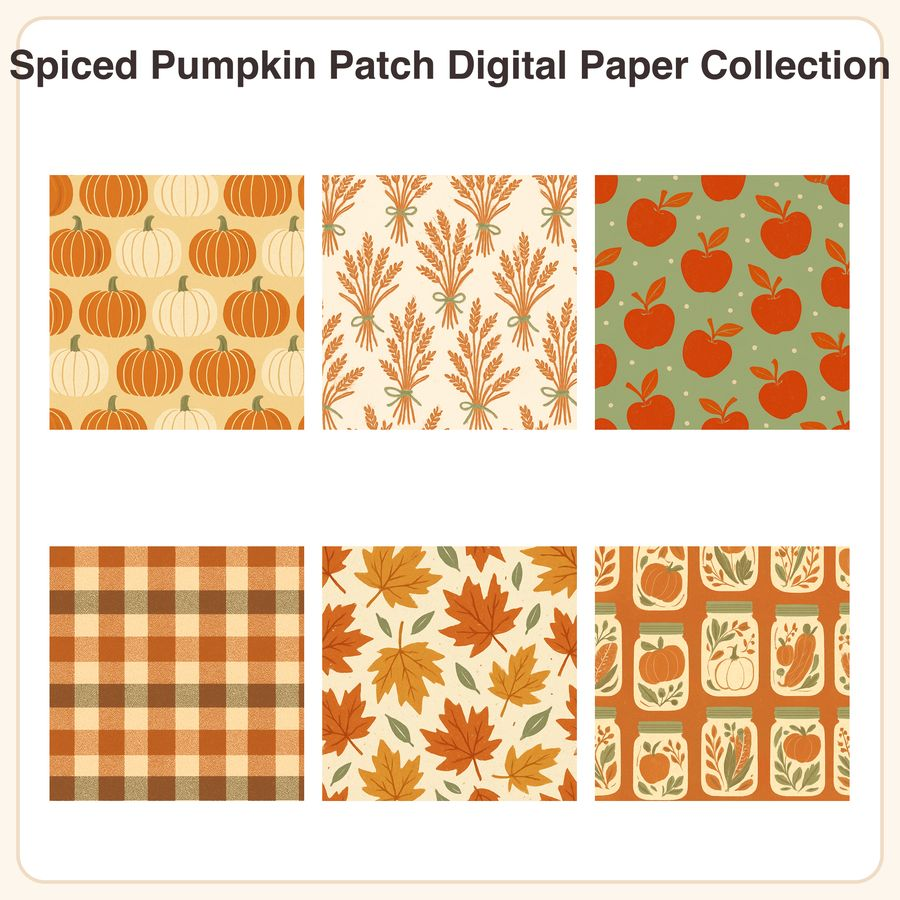

$4.99
View on Etsy🍂 Cozy up your autumn projects with a farmstand-inspired paper pack that bridges the gap between Halloween and Thanksgiving décor! This collection includes 6 warm, flat-vector illustrated seamless patterns in a burnt-orange, cream, and sage-green palette with hand-drawn folk texture — perfect for planners, invites, packaging, and scrapbook layouts. What's included: • 6 seamless patterns, each as a 3072px x 3072px JPEG (12x12in @ 300dpi) • 6 matching repeatable PNG tiles for seamless custom-size tiling • Total of 12 files Patterns: 1. Rows of ribbed pumpkins in burnt orange and cream 2. Dried wheat stalks tied with twine on cream ground 3. Small red apples scattered on sage green 4. Gingham plaid in pumpkin-spice orange and brown 5. Falling maple leaves in rust and mustard tones 6. Mason jar silhouettes filled with autumn produce How to use: Open files in any photo editor or design software (Canva, Photoshop, Procreate, etc.). Use the JPEGs directly as 12x12in printable backgrounds, or tile the PNG files to fill any custom size — great for planner covers, invitations, gift wrap, packaging, digital scrapbook pages, and more. License: For personal and small-business commercial use on finished products, up to 500 units sold. Please do not resell, redistribute, or share the digital files themselves in original or altered form. Honest disclosure: These designs were created in-house by our shop with the help of AI tools, then refined and prepared as print-ready seamless patterns. Instant digital download — no physical item will be shipped.